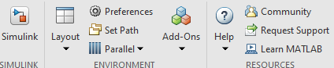
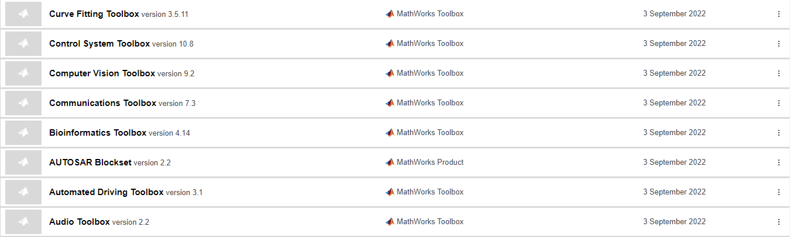

<!DOCTYPE html>
<html lang="en">
<head>
    <meta charset="UTF-8">
    <meta name="viewport" content="width=device-width, initial-scale=1.0">
    <title>بلاگ</title>

    <style>
        @font-face {
            font-family: 'fontsite';
          
            src: url(fonts/Sans\ a4fran3.eot);
            src: url(fonts/Sans\ a4fran3.ttf);
            src: url(fonts//Sans\ a4fran3.woff);
        }
        *{
            margin: auto;
            padding: auto;
            font-family: 'fontsite';
        }
        #menu{
            width: 1300px;
            background-color: rgba(17, 17, 17, 0.76);
            position: fixed;
        }
        
        #menu-right{
            width: 1000px;
            height: 100px;
            margin-right: 50px;
        }
        
        #menu-right li{
            margin-top: 25px;
            display: inline-block;
            padding: 15px;
            margin-right: 5px;
        }
        
        #menu-right a{
            text-decoration: none;
            color: rgb(250, 247, 247);
        
        }
        
        #menu-logo{
            background-image: url(img/logo.png);
            width: 35px;
            height: 35px;
            float: right;
            margin-top: 35px;
        }
        #menu-right a:hover{
            background-color:rgb(255, 255, 255);
            color: rgb(0, 0, 0);
            border-radius: 5px;
            cursor: pointer;
        
        }
        
        #menu-left a:hover{
            background-color:rgb(255, 255, 255);
            color: rgb(0, 0, 0);
            border-radius: 5px;
            cursor: pointer;
        
        }
        
        #menu-left{
            width: 230px;
            height: 100px;
            margin-left: 20px;
        }
        
        
        #menu-left li{
            margin-top: 25px;
            display: inline-block;
            padding: 5px;
            margin-top: 30px;
        }
        
        #menu-left a{
            text-decoration: none;
            color: rgb(253, 253, 253);
            margin-right: 15px;
        }
        html,body{
            margin:0;
            height:120%;
            font-family: 'Josefin Sans', sans-serif;
          
          }
          .header{
            position:relative;
            overflow:hidden;
            display:flex;
            flex-wrap: wrap;
            justify-content: center;
            align-items: flex-start;
            align-content: flex-start;
            height:50vw;
            min-height:400px;
            max-height:550px;
            min-width:300px;
            color:#eee;
          }
          .header:after{
            content:"";
            width:100%;
            height:40%;
            position:absolute;
            bottom:0;
            left:0;
            z-index:-1;
           background: linear-gradient(to bottom, rgba(0,0,0,0) 0%,rgba(27,32,48,1) 100%);
          }
          .header:before{
            content:"";
            width:100%;
            height:100%;
            position:absolute;
            top:0;
            left:0;
              -webkit-transform: translateZ(0) scale(1.0, 1.0);
              transform: translateZ(0);
              background: linear-gradient(rgba(13, 13, 14, 0.904),#4a63889d), url(img/blog3.jpg);
              background: linear-gradient(#fff);
            background-size:cover;
            background-attachment:fixed;
            animation: grow 60s  linear 10ms infinite;
            transition:all 0.2s ease-in-out;
            z-index:-2
          }
          .header a{
            color:#000000
          }
          .menu{
            display:block;
            width:30px;
            height:30px;
            border:2px solid #0f0f0f;
            border-radius:3px;
            position:absolute;
            right:20px;
            top:20px;
            text-decoration:none
          }
          .menu:after{
            content:"";
            display:block;
            width:20px;
            height:3px;
            background:rgb(0, 0, 0)7f7;
            position:absolute;
            margin:0 auto;
            top:5px;
            left:0;
            right:0;
            box-shadow:0 8px, 0 16px
          }
          .logo{
            border:2px solid #fff;
            border-radius:3px;
            text-decoration:none;
            display:inline-block;
            margin:20px;
            padding:5px 10px;
            font-weight:600;
            font-size:1.2em;
            box-sizing:border-box
          }
          .sides, .info{
            flex: 0 0 auto;
            width:50%
          }
          .info{
            width:100%;
            padding:15% 10% 0 10%;
            text-align:center;
            text-shadow:0 2px 3px rgba(0,0,0,0.2)
          }
          .author{
            display:inline-block;
            width:50px;
            height:50px;
            border-radius:50%;
            background:url(img/user1.jpg) center no-repeat;
            background-size:cover;
            box-shadow:0 2px 3px rgba(0,0,0,0.3);
            margin-bottom:3px
          }
          .info h4, .meta{
            font-size:0.7em
          }
          .meta{
            font-style:italic;
          }
          @keyframes grow{
            0% { transform:scale(1)}
            50% { transform:scale(1.2)}
          }
          .content{  
            padding:5% 10%;
            text-align:justify
          }
          .btn{
            color:#333;
            border:2px solid;
            border-radius:3px;
            text-decoration:none;
            display:inline-block;
            padding:5px 10px;
            font-weight:600
          }
          
          .twtr{
            margin-top:100px
          }
          .footr {
            width: 100%;
            height: 350px;
            background: #1a1a1a;
            margin: 20px auto 0;
            position: relative;
        }  
        
        .main-footer{
            margin: 0 auto;
            width: 1100px;
        }
        
        .about{
            width: 350px;
           height:300px;
            float: right;
        }
        
        .about h5 {
            color: #e2e2e2;
            padding:5px;
            margin: 20px auto;
        
        }
        
        .about p{
            color: #e2e2e2;
            text-align: justify;
            font-size: 15px;
            font-family: 'fontsite';
        
        }
        
        .social{
            width: 350px;
            margin: 0 50px;
            float: right;
        }
        
        .about h5 , .social h5 {
            color: #e2e2e2;
            padding:5px;
            margin: 20px auto;
        }
        
        .social ul li{
            float: right;
            margin: 10px 2px;
        }   
        
        .social ul li img{
            border-radius: 50%;
        }
        
        .about h5 , .social h5 , .access h5{
            color: #e2e2e2;
            padding:5px;
            margin: 20px auto;
        }
        
        .access{
            width: 300px;
            float: right;
        }
        
        .access ul li a{
            color: #e2e2e2;
            margin: 2px;
        }
        .access ul li a:hover{
            color: #4c7d89;
        }
        
        .footer-bot{
            width: 1100px;
            height: 50px;
            background: #3a1847;
            margin: 0 auto;
            border-top-left-radius: 4px;
            border-top-right-radius: 4px;
            clear: both;
        }
        
        .copyright{
            margin: 15px 20px;
            float: right;
            color: #e2e2e2;
            }
            .footer-bot .ui{
                margin:15px 20px;
                float: left;
                color: #e2e2e2; 
            }
        
        
        
            
    </style>
</head>
<body>
    
</body>
</html>


<div style="width: 1300px;height:1000px;  margin:auto;">
    <header>
        
        <section id="menu">
            
               <section id="menu-right" style="float: right;">
                <section id="menu-logo">
                

                </section>
                <nav dir="rtl">
                    <ul>
                      <li><a href="index.html"> خانه </a></li>
                      <li><a href="#courses">آخرین دوره ها</a></li>
                      <li><a href="#blog"> وبلاگ</a></li>
                      <li><a href="support.html">   پشتیبانی</a></li>
                      <li><a href="#footer"> تماس با ما </a></li>
                    </ul>
                </nav>
                
            </section>

        </section>
    </header>


</head>
<body dir="rtl">
    <div class="header">
        
        <div class="info">
          <h1 style="color: #ffffff;">نرم افزار متلب چیست و چه کاربردی دارد؟</h1>
          <div class="meta">
            <a href="" target="_b" class="author"></a><br> توسط ادمین 24 اردیبهشت 
          </div>
        </div>
      </div>
      <section class="content">
        <p>
            نرم افزار متلب چیست و چه کاربردی دارد؟
            <br>
 اگر در هر یک از رشته های مهندسی تحصیل می کنید احتمالا نام نرم افزار متلب به گوش شما آشنا باشد در این مقاله قصد دارم شما را با این نرم افزار قدرتمند و پر توان آشنا کنم پس با من همراه باشید.

 تاریخچه
 ابتدا اجازه دهید کمی درباره گذشته ی این نرم افزار اطلاعاتی در اختیار شما قرار دهم. (MATLAB) توسط ریاضی دان و برنامه نویسی به نام (Cleve Moler)  بوجود آمد ایده اصلی پیدایش این نرم افزار رساله ی دکترای آقای (Moler) بود. قبل از اینکه (version 1.0) این برنامه انتشار یابد، نرم افزار (MATLAB) یک زبان برنامه نویسی نبوده و فقط برای اجرای محاسبات روی ماتریس ها کاربرد داشت و هیچگونه جعبه ابزار (Toolbox) و برنامه ی خاصی در آن وجود نداشت.

 در سال 1984 برای اولین بار در کنفرانس کنترل اتوماتیک در شهر لاس وگاس آمریکا به شکل تجاری رونمایی شد و کمپانی (Mathworks) برای توسعه این نرم افزار تشکیل شد. <br><br>اولین خرید این نرم افزار در همان سال توسط شخصی از دانشگاه ماساچوست (MIT) صورت گرفت. برای پیاده سازی این نرم افزار از زبانهای برنامه نویسی C، C++ و MATLAB استفاده شده است.

 MATLAB چیست؟
 (MATLAB) مخفف (MATrix LABoratory) است، یعنی آزمایشگاه ماتریس ها، بدین صورت که همه ی اتفاقات در این نرم افزار در قالب ماتریس رخ می دهد. همانطور که از نام نرم افزار پیداست، آزمایشگاهی بودن آن باعث شده که اکثر محققان و دانشجویان جهت پیشبرد اهداف علمی خود از نرم افزار استفاده کنند. در سایر زبانهای برنامه نویسی چارچوب هایی (Frameworks) برای راحت تر کردن کد نویسی و سرعت بخشیدن به عملکرد برنامه وجود دارند، متلب برای این منظور از جعبه ابزارهایی (Toolbox) استفاده می کند تا علاوه بر موارد فوق یک سری مطالب علمی را جهت استفاده ساده کند. برخی از جعبه ابزارهای متلب به قرار زیر هستند:

 1 - image processing (جعبه ابزار پردازش تصویر)

 2 - optimization (جعبه ابزار بهینه سازی)

 3 - control system (جعبه ابزار مهندسی کنترل)

 4 – communication system (جعبه ابزار مهندسی مخابرات) 
 <br>
  <br>
    </p>
    <p>برای دسترسی به سایر جعبه ابزارها می توانید طبق تصویر زیر عمل کنید.
        <br>
        <br>
    </p>
        
 <br><br>
        <p>
            با کلیک بر روی Add-Ons و سپس کلیک بر روی Manage Add-Ons  تصویری مانند زیر برای شما باز خواهد شد که تمام جعبه ابزارهایی که نصب کردید را نشان می دهد که برای دسترسی به (Documentation) مربوط به جعبه ابزار (توابع و دستورات موجود) با زدن بر روی سه نقطه و کلیک بر روی (Open Documentation) شما به راهنمای جعبه ابزار هدایت می شوید.
        </p>
        <br>
        <br>
    </p>
        
        <br><br>
        <p>شما می توانید راجع به سایر جعبه ابزارها که تعداد آنها کم نیست تحقیق کنید.

            متلب مانند سایر زبانهای برنامه نویسی دستورات شرطی، حلقه ها و توابع را در خود جای داده است تا برنامه نویسان به راحتی در این نرم افزار کدنویسی کنند. همچنین متلب از شی گرایی نیز پیروی می کند یعنی می توان در آن کلاس تعریف کرد.
            
            در نرم افزار متلب می توان انواع نمودارهای دو بعدی و سه بعدی را رسم کرد. سایر نمودارها خاص مانند هیستوگرام (Histogram)، (Scatter) و... برای رسم شدن دارای دستورات خاصی هستند. علاوه بر موارد فوق شما از قسمت سیمولینک (Simulink) هم می توانید مدارات و بلوک دیاگرام های مختلف را شبیه سازی کنید.</p>

            <br><br>
            <p>
                کاربردها
 Statistics and Machine Learning:

 این جعبه ابزار بسیار سودمند می باشد که شامل توابع زیادی مربوط به آمار و احتمال است. همچنین یکسری مدل های آماده برای یادگیری ماشین در خود جای داده است که برای حل مسائل بسیار مفید است.

 <br><br>
 Curve Fitting:

 این جعبه ابزار به ما کمک می کند که طرح و الگو یک منحنی یا سطوح را به دست آوریم و بتوانیم عملیاتی نظیر انتگرال گیری و ... را روی آن انجام دهیم.
  <br><br>

 Signal Processing:

 پردازش سیگنال در شاخه های مختلف مهندسی کاربرد دارد. این جعبه ابزار بسیاری از تبدیل های مهم مثل لاپلاس، Z  و فوریه را در خود جای داده است که می توانند بر روی سیگنال های مختلف اعمال شوند.
 <br><br>

 Deep Learning:

 این جعبه ابزار از زیر مجموعه یادگیری ماشین است که برای تشخیص گفتار، پردازش تصاویر پزشکی و شبکه های عصبی کاربرد دارد.
 <br><br>

 Financial Instruments:

 در این جعبه ابزار می توان درباره ی مواردی مانند سودآوری، نقدینگی و سایر مفاهیم مالی اطلاعات کسب کرد. همچنین می توان بسیاری از پارامترهای مالی را محاسبه کرد.
 <br><br>

 Aerospace:

 این جعبه ابزار جهت تحلیل ناوبری و مصورسازی مسیر پرواز استفاده می شود. همچنین می توان سایر موارد و اصطلاحات مربوط به مهندسی هوافضا را در این جعبه ابزار یافت.
            </p>
      </section>

      <footer>
        <div id="footer" class="footr" dir="rtl">
            
              <div class="about" style="margin-right: 80px;">
                <h5 style="margin-right: 85px;margin-top:30px">درباره ما</h5>
                <p style="margin-right: 85px;">
                    لرن یک وب سایت جامع آموزشی در حوزه برنامه نویسی حرفه ای بوده و تمام تلاش این مجموعه و تیم آموزشی این بوده است که رضایت هنرآموزان در هر صورت بر هر چیزی اولویت داشته باشد و ثانیا تمام دانشجویان دوره را به برنامه نویسان حرفه ای تبدیل کند.
                </p>
              </div>
              <div class="about" style="margin-right: 20px;">
                <h5 style="margin-right: 85px;margin-top:30px">درباره ما</h5>
                <p style="margin-right: 85px;">
                    لرن یک وب سایت جامع آموزشی در حوزه برنامه نویسی حرفه ای بوده و تمام تلاش این مجموعه و تیم آموزشی این بوده است که رضایت هنرآموزان در هر صورت بر هر چیزی اولویت داشته باشد و ثانیا تمام دانشجویان دوره را به برنامه نویسان حرفه ای تبدیل کند.
                </p>
              </div>
              <div class="social" style="margin-right: 10px; margin-top:30px" >
                <h5 style="margin-right: 110px;">با ما در ارتباط باشید</h5>
                <div>
                    <p style="color:aliceblue;margin-right:110px">
                        ایمیل:learn@gmail.com
                    </p>
                    <br>
                    <p style=" color:aliceblue;margin-right:110px">
                        تماس : 091645458725

                    </p>
                    <br>
                    <p style=" color:aliceblue;margin-right:110px">
                        تماس : 06625252528

                    </p>
                </div>
            </div>
<br>
            <div class="footer-bot">
                <center>
                    <div class="copyright" style="margin-right: 350px;">
                        تمام حقوق مادی و معنوی متعلق به سایت لرن می باشد
                      </div>
                </center>
                <br>
            </div>                  
        </div>

       
    </footer>

</div>

</body>
</html>
